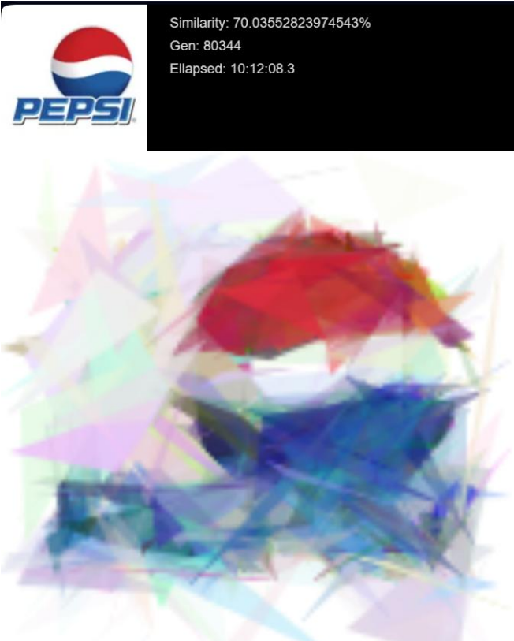
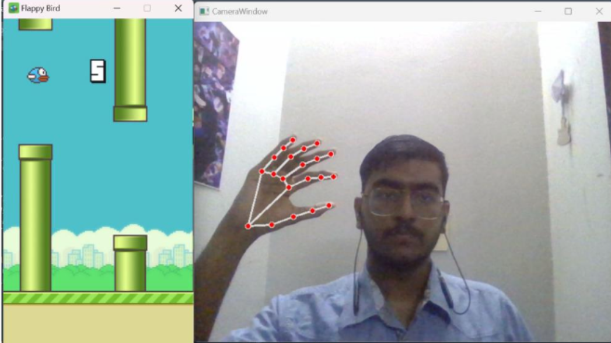

Projects
Following are few of the projects that I developed.
Click on the ones that interest you.
Image Generation using Genetic Algorithm
The project was designed to explore and understand the underlying principles and workings of genetic algorithms in a practical setting.
Introduction
Image generation using a Genetic Algorithm (GA) involves evolving images through iterative processes, mimicking natural selection. In this approach, an initial population of random images is generated. These images are then evaluated based on a fitness function, which measures how closely they meet the desired criteria (such as color patterns, shapes, or artistic goals). The best-performing images are selected for reproduction, where they undergo crossover (mixing parts of images) and mutation (random changes). This cycle repeats over generations, gradually evolving images that meet the criteria more effectively. The result is an optimized image generated by the algorithm.
A Genetic Algorithm (GA) is an optimization technique inspired by the process of natural selection in biology. It solves problems by simulating evolution, where a population of candidate solutions (called individuals) evolves over multiple generations to find the best solution.
Key Steps in a Genetic Algorithm:
- Initialization: Create an initial population of random solutions.
- Fitness Evaluation: Each individual solution is evaluated using a fitness function, which measures how good the solution is.
- Selection: Individuals are selected based on their fitness, with fitter individuals having a higher chance of being selected to reproduce.
- Crossover (Recombination): Selected individuals combine their genetic material (solution components) to create offspring.
- Mutation: Small random changes are made to the offspring to introduce diversity.
- Replacement: The offspring replace some or all of the old population, forming the new generation.
- Repeat: This process is repeated for several generations until an optimal or satisfactory solution is found.
Advantages:
- GA is highly adaptable and can solve complex optimization problems.
- It can avoid getting stuck in local optima by maintaining diversity through mutation and selection.
Image Generation Using Genetic Algorithm
In image generation using a Genetic Algorithm (GA), the goal is to evolve images that meet certain desired characteristics. These could be aesthetic properties, patterns, or any other predefined criteria. The GA simulates the process of natural selection and evolution to improve the images over several generations.
Steps Involved in Image Generation Using GA:
- Representation of Images (Chromosomes): Each image is represented as a chromosome, which is typically an array or matrix of pixel values or image parameters (e.g., color intensities, shapes, or features).
- Initialization: The algorithm starts with a population of randomly generated images. These images can be random noise, basic shapes, or pixel patterns, depending on the problem.
- Fitness Function: A fitness function is used to evaluate how well each image meets the desired criteria. For example, if the goal is to generate an image that matches a target, the fitness function might compare pixel differences or overall color distribution between the generated image and the target.
- Selection: Images are selected to be parents for the next generation based on their fitness scores. Fitter images, meaning those closer to the desired output, have a higher chance of being selected.
- Crossover (Recombination): The selected images undergo crossover, where parts of two parent images are combined to create offspring. This step helps to pass desirable traits from both parents to their offspring, such as color patterns or shapes.
- Mutation: Occasionally, small random changes are made to the offspring's image in a process called mutation. This introduces diversity and ensures the algorithm doesn't get stuck in a local optimum.
- New Generation: The offspring created through crossover and mutation form the new population. This generation is evaluated using the fitness function, and the process repeats. Over time, the images evolve towards the desired result.
- Termination: The process continues for multiple generations until the evolved image satisfies the desired criteria, or until a predefined number of generations are completed.
How it was done here:
Imagine the goal is to generate an image that closely matches a famous logo:
- Initial Population: The first set of random images is created (random shapes arrangements).
- Fitness Evaluation: The fitness function measures how close each image is to the target painting by comparing their pixel values or overall structure.
- Selection: The best images, those that are closest to the target, are selected as parents.
- Crossover: The selected images are combined to form new offspring (mixing parts of the best images).
- Mutation: Small random changes (such as altering a pixel’s color or position) are applied to introduce variety.
- Repeat: This process is repeated for many generations, with the images gradually improving until one closely resembles the target painting.
Implementation and output
As the similarity reaches 70%, it starts showing as blurred image of the target. This is the closest I got in a limited time as the program starts to take more and more time to improve the similarity as the algorithm reaches the convergence slowly

Summary:
In conclusion, the implementation of a genetic algorithm for image
generation has demonstrated both the potential and challenges in
harnessing computational techniques to produce visual content. This
shows how a concept of “the survival of the fittest” from biology, a
subject way different from computer science manage to improve and
provide a new angle to the making of the algorithm.
This implementation has underscored the significance of optimizing
various parameters within the genetic algorithm framework. The
careful adjustment of population size, mutation rates, crossover
mechanisms, and fitness evaluation were pivotal in steering the
algorithm towards producing images that exhibit desired target
characteristics.
I manage to utilize this technique to make a simple image generation
algorithm, which generates the images that resembles the target and
and provides a complete solution.
Making a game using gesture recognition
Developed a gesture-controlled game using Python, leveraging OpenCV and MediaPipe for hand tracking.
Introduction
I’ve always been fascinated by how gesture recognition can transform the way we interact with games. So, I decided to give the classic Flappy Bird a fresh twist by integrating hand gestures for control. Instead of tapping the screen or pressing keys, players like me can use hand movements to make the bird "flap" and navigate through the pipes. Using tools like MediaPipe and OpenCV, I was able to create a system that tracks gestures such as finger's pinching motion, which trigger the bird’s movement. The result is an immersive, interactive experience where my physical actions directly influence the gameplay. It’s a fun challenge to master, and I can’t wait for others to try it out and experience the game in a whole new way.
OpenCV and MediaPipe are two powerful tools commonly used for computer vision tasks, including hand tracking. I used them to make the needed input system for the game's need.
Working of the two libraries:
- Capture Image/Video: OpenCV is used to acquire images or video from the camera.
- Hand Detection: The image is passed to MediaPipe, which detects the hand in the frame and extracts the 21 keypoints of the hand.
- Keypoint Visualization: Using OpenCV, you can visualize the hand keypoints, often by drawing circles or lines over the landmarks on the frame.
- Tracking: If the hand moves in subsequent frames, MediaPipe continuously detects and updates the hand's keypoints, and OpenCV can render these in real time.
This combination allows real-time hand tracking in various applications
This was used trach a particular gesture, in this case the pinching motion of the finger, to replace the regular input of the player in the Flappy Bird game.
Implementation and output
Summary
Integrating hand gestures into games like Flappy Bird enhances the player experience by
adding a physical dimension to gameplay, fostering active engagement with the virtual
environment. By controlling in-game elements through gestures, players enjoy a more
immersive and intuitive control scheme, enhancing their sense of agency within the game
world.
Looking ahead, the integration of hand gestures into games like Flappy Bird could advance
further, potentially incorporating advanced gesture recognition systems for enhanced
precision and expanding into VR and AR gaming experiences. This evolution could
revolutionize player interactions with virtual worlds, opening up new possibilities for
gameplay mechanics and experiences.
Study of Principle Component Analysis
This project was done to assess the impact of dimensionality reduction and how it's implemented.
Principal Component Analysis (PCA) is a statistical technique used to simplify the complexity of high-dimensional data while retaining trends and patterns. It transforms the data into a set of orthogonal (uncorrelated) variables called "principal components." These components are ordered so that the first few retain most of the variation in the data.
Key Concepts:
- Dimensionality Reduction: PCA reduces the number of variables (or features) by projecting the original data into a lower-dimensional space.
- Variance Maximization: The principal components capture the maximum variance in the data, helping to identify the most important features.
- Orthogonality: The new dimensions (principal components) are orthogonal, meaning they are uncorrelated and independent of each other.
Steps for Implementing PCA:
- Standardize the Data: PCA works best when the data is centered, so the first step is to standardize the dataset. This involves subtracting the mean of each feature from the dataset and dividing by the standard deviation.
- Compute the Covariance Matrix: The covariance matrix represents how the features vary together. It is calculated by taking the dot product of the standardized data with its transpose.
- Calculate Eigenvalues and Eigenvectors: The eigenvectors and eigenvalues of the covariance matrix are calculated using linear algebra methods. The eigenvectors represent the directions of maximum variance (principal components), and the eigenvalues represent the amount of variance in each direction.
- Sort Eigenvectors: The eigenvectors are sorted in descending order of their corresponding eigenvalues. The top eigenvectors correspond to the most significant principal components.
- Project the Data: Finally, the original dataset is projected onto the top k eigenvectors to reduce its dimensionality.
Summary
PCA is a valuable tool in data analysis and machine learning. It simplifies complex data while retaining the most important patterns, making it easier to model and interpret. Whether for reducing dimensionality, enhancing model performance, or visualizing data, PCA plays a critical role in handling high-dimensional datasets efficiently.
A* Path finding using Python
A visualization tool for A* path finding algorithm in Artificial Intelligence.
The A* algorithm is a popular and efficient pathfinding algorithm used in computer science, especially in fields like artificial intelligence, robotics, and game development. It is commonly used to find the shortest path from a starting point to a goal point while avoiding obstacles in a grid or graph.
How A* Algorithm Works:
The A* algorithm combines the strengths of two other well-known algorithms: Dijkstra's Algorithm (which finds the shortest path) and Greedy Best-First-Search (which chooses paths that are closer to the goal). A* uses both the actual cost from the start node and a heuristic estimate of the cost to the goal to guide its search.
Key Components of A* Algorithm:
- g(n): The actual cost to reach the current node n from the start node. This is the cost of the path already taken.
- h(n): The heuristic estimate of the cost to reach the goal from the current node n. This is an educated guess based on the specific problem and environment (e.g., straight-line distance, Manhattan distance).
- f(n): The total estimated cost of the path through node n. It is calculated as the sum of g(n) and h(n):
f(n) = g(n) + h(n).
Steps of the A* Algorithm:
- Start by initializing the open list (nodes to be evaluated) with the starting node and the closed list (nodes already evaluated) as empty.
- While the open list is not empty, do the following:
- Select the node with the lowest f(n) value from the open list.
- If this node is the goal node, reconstruct the path from the start node to the goal node and return it.
- Otherwise, move the node to the closed list and evaluate its neighbors.
- For each neighbor, calculate g(n), h(n), and f(n). If the neighbor is not in the open list or has a better f(n) value, add it to the open list.
- Repeat this process until the goal node is found or the open list is empty (which means no path exists).
Advantages of A* Algorithm:
- Optimal Path: A* is guaranteed to find the optimal path if the heuristic is admissible (i.e., it never overestimates the true cost).
- Efficiency: A* balances the exploration of the search space and the focus on the goal, making it more efficient than brute-force search methods.
- Flexible Heuristic: The heuristic function can be customized based on the problem, allowing A* to adapt to different types of pathfinding tasks.
Visualizing the A* algorithm helps in understanding how it explores the search space, evaluates paths, and converges towards the goal. It makes the algorithm's decision-making process transparent and demonstrates how it balances between the actual path cost and the estimated cost to the goal.
Key Aspects of A* Visualization:
- Search Space: The search space here is represented as a grid, with nodes that can either be passable or blocked. The start and goal points are marked, and the algorithm searches for the best path between them.
- Open and Closed Lists: The open list (nodes to be evaluated) and the closed list (nodes that have already been evaluated) are visualized through different colors. As A* explores the space, nodes move from the open list to the closed list, showing the algorithm’s progress.
- Pathfinding Process: Each node is evaluated based on its f(n) value, which is the sum of the actual cost g(n) and the heuristic estimate h(n). Nodes with lower f(n) values are prioritized, leading the algorithm to the optimal path. This can be visualized by showing which nodes are chosen first.
- Path Reconstruction: Once the goal is reached, the path is reconstructed by tracing back from the goal node to the start node, showing the optimal path found by the algorithm.
Summary
Visualization of the A* algorithm provides a clear understanding of how it efficiently searches for the optimal path. By showing how it explores the grid, evaluates paths, and reconstructs the solution, visualizations make it easier to grasp the underlying mechanics of the algorithm and how it balances exploration and exploitation of the search space.